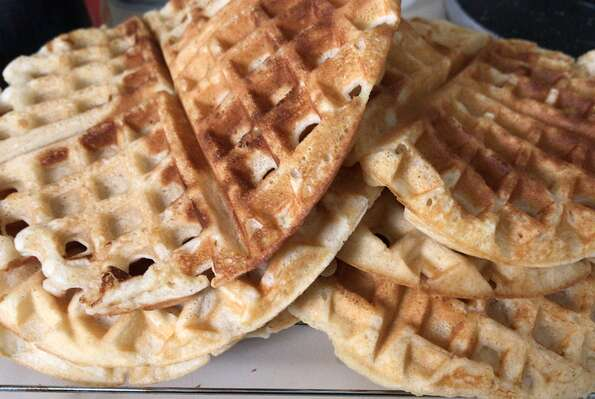

Waffles

Description
It's time to put that waffle iron languishing in the back of your cabinet to good use. These airy, delicate and crisp-edged waffles are so fabulous, yet so simple to throw together, they're destined to become part of your weekend breakfast routine. Freeze leftovers, if you have any, in Ziplock
bags and serve them during the week. You can pop them in the toaster to reheat (use a light setting) and they come out nearly as well as freshly made, maybe even slightly crunchier.
Ingredients
- 2 eggs
- 2 cups all-purpose flour
- 1 1/4 cups milk
- 1/2 cup vegetable oil
- 1 tablesppon white sugar
- 4 teaspoons baking powder
- 1/4 teaspoon salt
- 1/2 vanilla extract
Steps
- Preheat waffle iron. Beat eggs in large bowl with hand beater until fluffy. Beat in flour, milk, vegetable oil, sugar, baking powder, salt and vanilla, just until smooth.
- Spray preheated waffle iron with non-stick cooking spray. Pour mix onto hot waffle iron. Cook until golden brown. Serve hot.